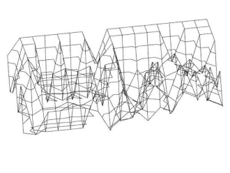

Photography
Erin O’Malley
Erin is a digital macro Photographer based in U.S. Her focus of experiments of lights are pretty experimental, but her micro eyes of view always making prismic aurora images. The one of the most important her work such as the picture here is inspired by Olafur Eliasson and Gints Gabrāns as Latvian artist, acording to her saying.
18 Jan 2019
